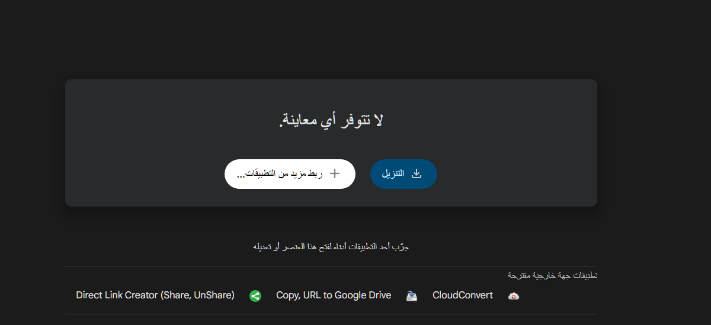
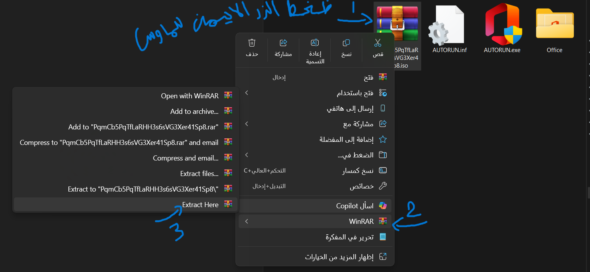
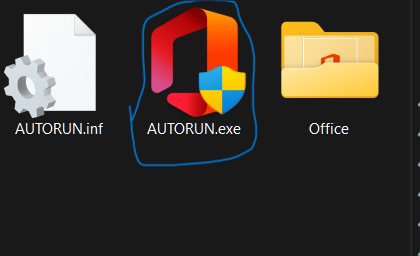
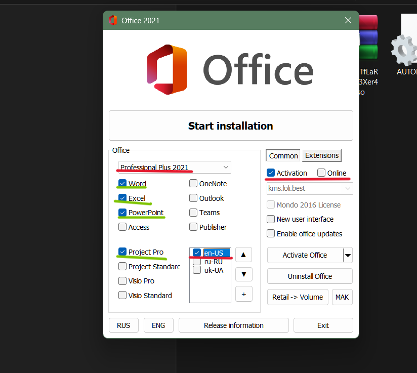
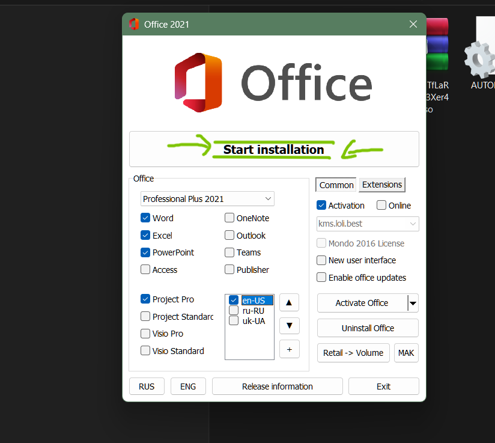

طريقة التحميل والتفعيل
يشترط التنصيب لنظام windows فقط
- ادخل الى الرابط عن طريق زر التأكيد في نهاية الصفحة
- قم بتحيل الملف

- بعدها قم بفك الضغط عن الملف

- اضغط على ايقونة البرنامج

- تأكد من تحديد الاعدادات التي تحتها خط احمر بدقة اما التي تحتها خط اخضر فهي البرامج التي تريدها اي انها اختيارية

- بعد التأكد من ضبط الاعدادات بدقة قم ببدأ التحميل وانتضر.قد يستغرق وقتا حافض على اتصالك بالانترنت وتأكد من عدم اطفاء الجهاز اثناء التحميل

لا توجد اي مشكلة في اختلاف الاصدارات فستعمل بنفس الطريقة تماما كل ما يختلف هو فقط سهولة الاستخدام للاصدارات الحديثة
صفحة التحميل المباشر